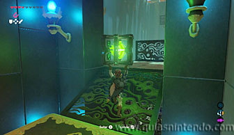
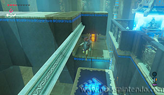

Puedes entrar en este santuario desde que llegas a la región de la torre del cañón. Está situado al noroeste de la torre, dentro del desierto, en la meseta que hay al norte. El único problema para encontrarlo es que durante muchas horas hay una gran tormenta de arena que te impide ver con claridad y que además, inutiliza el mapa de la piedra sheikah. Si hablas con un personaje, Nolio, que está en una torre de vigilancia del Bazar Sekken, te dirá que a ciertas horas la tormenta para (en este momento comenzará una Prueba heroica (La tormenta que amaina), aunque puedes encontrar la entrada al santuario sin necesidad de que comience la prueba). Si esperas al momento en el que la tormenta cesa, te será más sencillo moverte por el desierto y lo localizarás fácilmente. Cuando localices la entrada del santuario completarás la prueba heroica que te propuso Nolio.
Una vez dentro del santuario debes avanzar hasta que encuentres un miniguardián que puedes destruir sin esfuerzo usando un arco y flechas.
Llegarás a un pasillo donde se mueve una plataforma en horizontal. En el otro extremo hay un cubo que proporciona electricidad y debes llevártelo. El problema es que al cogerlo la plataforma deja de moverse. Lo que debes hacer es usar el imán para llevar el cubo pegado a los cables de la pared. Así la plataforma se moverá a la vez que transportas el cubo.
Cuando llegues al otro extremo deja el cubo en el suelo y la plataforma parará. Así, además, al estar alejado de los cables podrás cogerlo con las manos. Ahora sube la rampa con él y al acercarte al interruptor el ascensor comenzará a subir (si separas el cubo se detendrá). No dejes que suba hasta arriba si quieres coger el primer cofre de los 4 que hay en este santuario, ya que se encuentra en un hueco del primer piso (contiene una cimitarra de la luna).
Continúa hasta arriba y baja del ascensor llevándote el cubo.

En la siguiente sala hay dos miniguardianes, puedes lanzar el cubo al suelo (y como es metálico se electrificará) para acabar con ellos enseguida. Ten en cuenta que si pisas el suelo electrificado también recibirás daño. Si no quieres arriesgarte deja el cubo, destruye los miniguardianes con flechas y después baja para abrir el segundo cofre (más tarde recogerás el cubo). Este cofre contiene un núcleo ancestral.
Abre el camino usando el imán para empujar el gran bloque de metal y después avanza por ahí. Ahora tienes dos caminos, subiendo una rampa y bajando otra tras el bloque. Primero ve por abajo para encontrar el tercer cofre del santuario.
Debes golpear el interruptor de cristal para activar un ascensor y después úsalo para llegar a la planta baja donde se encuentra el cofre (con una rupia plateada).
Ahora vuelve arriba y tendrás que ir por la rampa que iba hacia arriba, sin embargo, debes hacerlo con el cubo que da energía. Ve hacia atrás y cógelo de donde lo dejaras antes de subir. Cuando lo hagas deposítalo en un pedestal junto al ascensor que dará energía a otra plataforma.
Espera que esa plataforma que se ha activado llegue a tu lado y puedas subirte a ella. Después deja que te lleve, pero usa el módulo del imán en un bloque de metal que hay en medio del camino para poder pasar sin caerte.
Así podrás llegar al final del recorrido, donde se encuentra el altar. Sin embargo, todavía puedes coger un último cofre. Para ello tendrás que mover el bloque de metal hacia la posición original (una vez que tu ya hayas pasado).

Así puedes saltar a la plataforma donde se encuentra el cofre (desde la plataforma móvil) y abrirlo para encontrar un escudo del sol. Después regresa a la plataforma cuando se mueva hacia la salida y podrás llegar al altar. Al examinarlo obtendrás un símbolo de valía.
